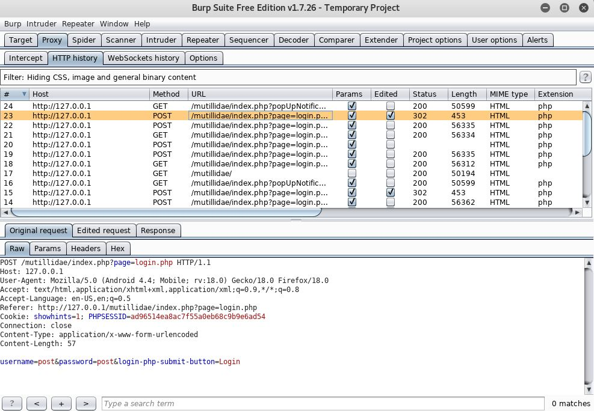
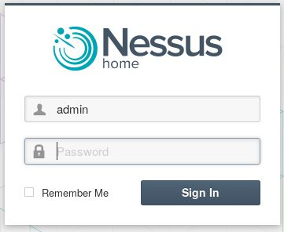

For fun I like to try pentesting freely available vulnerable web apps and also my friends web and mobile applications. Below you will see a video of me demonstrating how a weak protected web app can be compromised via sql injection.
Sql injection to bypass login and gain admin level access
This is burp suite and it is an intercepting proxy tool which can be used to intercept requests.
This is nessus vulnerability scanner and it is used to scan for vulnerabilities.
